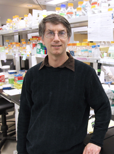

April 7, 2012
"Why Doesn't My Banana Get the 'Flu?"
An interactive session led by Dr. Brett Tyler
Director of the Center for Genome Research and Biocomputing and Stewart Professor of Genome Research at Oregon State University

We are surrounded by microbes. In fact human bodies contain more microbe cells than human cells. Most of these microbes live peacefully with our bodies, but a few cause nasty diseases and make us ill. Why is that? Plants are also surrounded by zillions of microbes. Most of these microbes live peacefully with those plants, but a few make plants really sick too, and can cause famines. But the microbes that cause diseases on humans almost never cause diseases on plants. Thus bananas don’t get the ‘flu. Similarly, humans mostly don’t suffer from plant diseases. Why is that? I’ll be talking about how the immune systems of humans and plants work, and how they are different. I’ll also talk about how some microbes can defeat human and plant immune systems to cause disease."Why Doesn't My Banana Get the 'Flu?"
An interactive session led by Dr. Brett Tyler
Director of the Center for Genome Research and Biocomputing and Stewart Professor of Genome Research at Oregon State University
Dr. Brett Tyler is the Director of the Center for Genome Research and Biocomputing and Stewart Professor of Genome Research at Oregon State University, and until recently was a Professor at the Virginia Bioinformatics Institute at Virginia Tech and a member of the Department of Plant Pathology, Physiology and Weed Science. His research career has spanned both human and plant infectious diseases. His current research interests center around using genome projects to understand how microbes co-exist or cause disease on plants and humans. He has created computer games for middle school students about people, plants and microbes.